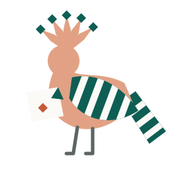

One form,
one meaning.
Bayan (بيان, “clarity”) is a value-oriented language that compiles to native code. Derived from C#, with no runtime, no garbage collector and no exceptions.
Source in, C in the middle, a native program out
hello.byn
print("Salam, world!")generated C (excerpt)
void byn_main__main(void) {
(void)byn_print(((byn_builtin_Stream)0),
BYN_STR("Salam, world!", 13));
}output
Salam, world!overloads.byn
struct Pos {
i64 x
Pos plus(by i64 d) => Pos { x: x + d }
Pos plus(from i64 a, to i64 b) => Pos { x: x - a + b }
}
i64 shift(i64 x, by i64 d) => x + d
i64 shift(i64 x, from i64 a, to i64 b) => x - a + b
let p = Pos { x: 1 }
print($"{p.plus(by: 2).x} {p.plus(from: 1, to: 9).x}")
print($"{shift(1, by: 2)} {shift(1, from: 2, to: 5)}")generated C (excerpt)
int64_t byn_main__shift(int64_t p_x, int64_t p_d) {
return byn_add_i64(p_x, p_d, byn_file_0, 10);
}
int64_t byn_main__shift__o1(int64_t p_x,
int64_t p_a, int64_t p_b) {
return byn_add_i64(
byn_sub_i64(p_x, p_a, byn_file_0, 11),
p_b, byn_file_0, 11);
}output
3 9
3 4errors-defer-failing.byn
union error StepError {
/// The step was told to fail.
told
}
i64 work(bool shouldFail) fails StepError {
defer print("defer")
defer failing print("defer failing")
defer failing (e) print($"defer failing saw {e}")
fail .told if shouldFail
return 1
}
print($"result {work(shouldFail: false) catch -1}")
print("---")
print($"result {work(shouldFail: true) catch -1}")generated C (excerpt)
byn_err byn_main__work(bool p_shouldFail,
int64_t* byn_out) {
byn_err t0 = {0};
if (p_shouldFail) {
t0 = ((byn_err){ .code = UINT32_C(9) });
/* … prints "defer failing saw …" … */
(void)byn_print(…, BYN_STR("defer failing", 13));
(void)byn_print(…, BYN_STR("defer", 5));
return t0;
}
/* … */
*byn_out = INT64_C(1);
return (byn_err){0};
}output
defer
result 1
---
defer failing saw The step was told to fail.
defer failing
defer
result -1Source and output are the compiler’s own test cases (tests/cases/run). The C is from bayan build --emit-c with #line directives removed and some lines elided (marked …): an illustration, not a stable format.

Clear news, in both senses
The dots on Arabic letters (إعجام) were added to remove ambiguity. Bayan keeps that promise in its grammar: one canonical spelling for each construct, so code reads one way. In the Qur’an (27:20–22) the hoopoe returns with news that is certain and clear. Compiler messages aim to be the same.
- Value types and explicit ownership. No GC, no hidden allocation.
- Errors are values:
fails,try,catch. No exceptions. - Compiles to C, then to a native executable with
zig cc. - The bootstrap compiler is C# on .NET 10 with NativeAOT. Self-hosting is in progress.